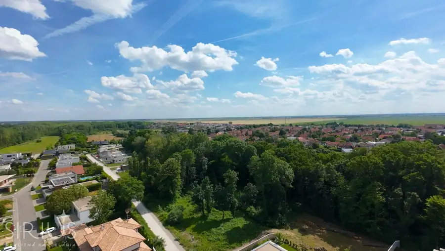
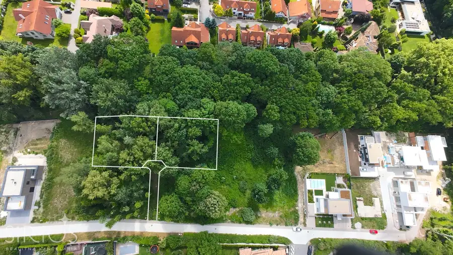
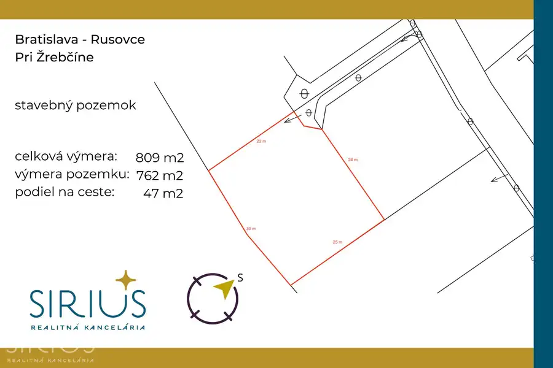
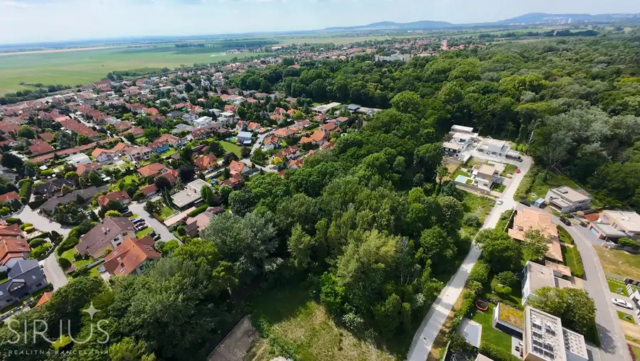
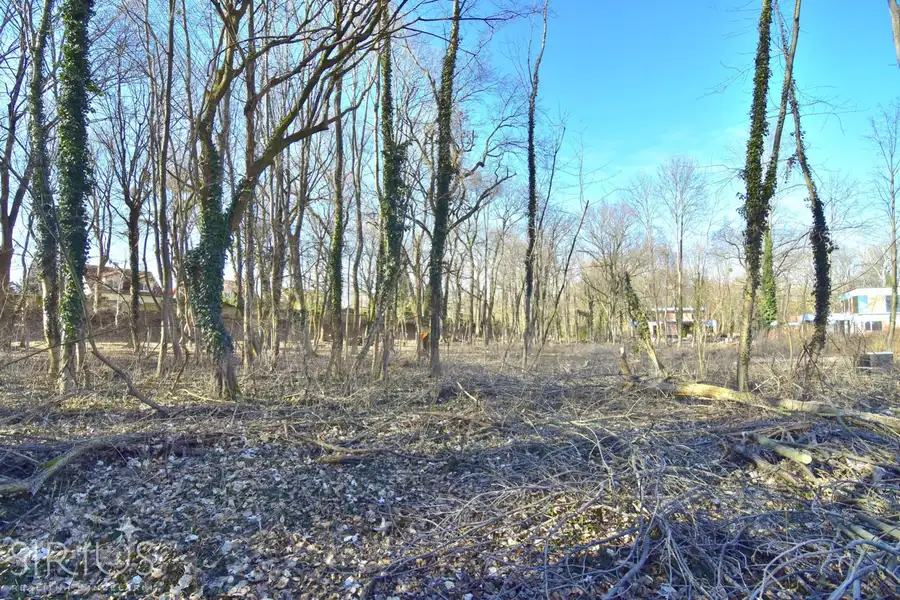
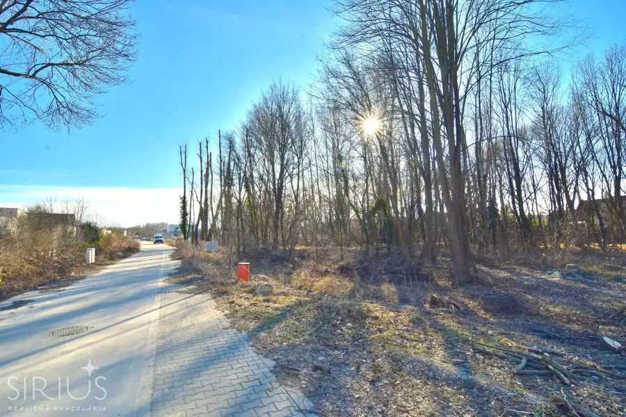

RUSOVCE, stavebný pozemok 809 m2 – vyhľadávaná časť pri lesoparku
Rusovce, Bratislava







- Plocha809 m²
- Poschodie0.
- Vlastníctvoosobné
O nehnuteľnosti
SIRIUS Realitná kancelária exkluzívne ponúka na predaj, rovinatý stavebný pozemok v jednej z najžiadanejších rezidenčných štvrtí mesta! Práve pred sebou máte jedinečnú možnosť kúpy vysoko dopytovaného lukratívneho miesta pre život, v obľúbenej časti Rusoviec – Pri Žrebčíne. Ideálny stavebný pozemok, v susedstve luxusnej rezidenčnej zástavby, v celistvej modernej štvrti obkolesenej lesmi. Na parcele je možné okamžité zahájenie výstavby rodinného domu. Top ponuka, pri ktorej netreba zaváhať!
ZÁKLADNÉ INFORMÁCIE:
• Bratislava V, Rusovce – Pri Žrebčíne
• stavebný pozemok vhodný na výstavbu rodinného domu
• veľkosť: 809 m2 (762 m2 pozemok + 47 m2 podiel na ceste)
• IS na pozemku: voda, plyn, kanalizácia, elektrina
MOHLO BY VÁS ZAUJÍMAŤ:
• šírka pozemku: 30 m2
• dĺžka pozemku: 25 m2
• funkčné využitie: rodinné domy
• koeficient zastavanosti: 22%
• koeficient podlažnosti: 1,5
• ideálny obdĺžnikový tvar pozemku
• ak by vám výmera nepostačovala alebo hľadáte pre svoju rodinu dva pozemky pri sebe, máme dobrú správu, na predaj ponúkame aj vedľajšiu identickú parcelu
• v prípade záujmu vieme zabezpečiť vydanie stavebného povolenia
AKÉ JE OKOLIE:
Rusovce – príjemná južná oblasť Bratislavy, plná histórie i jedinečnej prírody lužných lesov. Oblasť medzi jazerami, lesmi, Rusovským ramenom a Dunajskou hrádzou ponúka množstvo športových a voľnočasových aktivít (cyklochodník, turistika, rybolov, korčuľovanie, vodné športy). Okolitá prírodná scenéria robí Rusovce ideálnym miestom pre život. Rusovce si dlhodobo držia kredit obľúbeného miesta pre kvalitný život v Bratislave.
• V ľahkej dostupnosti sa nachádza park, pošta, kostol, múzeum, obchodné centrum, kaviareň, lekáreň, materská škôlka, základná škola, zdravotné stredisko, kaštieľ s rozsiahlou záhradou so vzácnymi stromami, zariadenie Ponteo s množstvom športovísk, wellness a reštauráciou. Taktiež zastávka MHD s priamymi linkami, výborná dostupnosť do centra Bratislavy (10 min autom, 20 min MHD). V pešej dostupnosti je taktiež železničná stanica.
Z NÁŠHO POHĽADU:
Jedinečná možnosť kúpy pozemku v Rusovciach. Absolútne najžiadanejšia lokalita pri lese, v ktorej iný voľný pozemok na predaj nenájdete. Tento pozemok je trvalá hodnota, pre vašu rodinu. Ponúkne vám život v tesnom kontakte s prírodou v mestskej časti, s pokojným charakterom a vynikajúcou rýchlou dostupnosťou celej Bratislavy. Ukážková parcela pre budúcu luxusnú vilu.
CENA:
495 000EUR
Konečná CENA BEZ ĎALŠÍCH POPLATKOV – vážime si našich klientov a preto všetky štandardné poplatky spojené s prevodom vlastníctva na Katastri máte od nás GRÁTIS.
POSTARÁME SA O VÁS – budeme vás sprevádzať celým obchodom, od prvej obhliadky až po odovzdanie vášho nového pozemku.
Právny servis, bezplatné hypotekárne poradenstvo, súdny znalec, bytový dizajnér, pomoc pri predaji inej nehnuteľnosti…
SIRIUS – VÁŠ KOMPAS VO SVETE REALÍT
Dajte nám o sebe vedieť:
www.sirius.sk
Parametre
- Rozloha pozemku
- 809 m²
- Poschodie
- prízemie
- Vlastníctvo
- osobné
- Status
- aktívne
- Voda
- verejný vodovod
- El. napätie
- 230/400V
- Plyn
- áno
- Kanalizácia
- áno
- Inžinierske siete
- áno
- Terén
- rovina
- Pripravené na výstavbu
- schválené v územnom pláne
- Dátum zverejnenia
- 2026-06-14